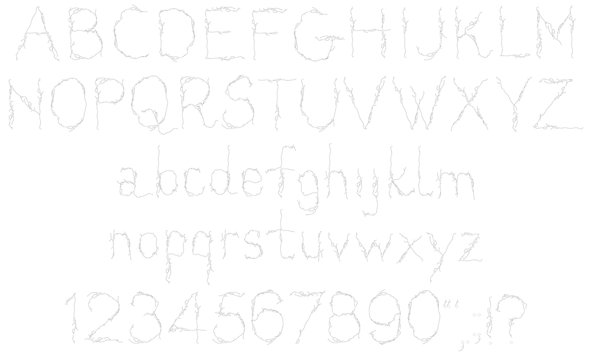

Vein is literally constructed from the white veins of the mandarin I was
peeling when I was thinking about how I could make a typeface that is
fragile and lively at the same time for my The Crack project.
I think the vein and the crack share the resemblance of
creating the tension between vulnerability and resilience, and they look
similar visually.